Frederick Solt
SWIID
DCPO
Research
Teaching
Software
Blog
CV
Updates and Working Notes
Income Inequality & Its Consequences, Comparative Political Behavior, and Dynamic Comparative Public Opinion
Categories
dotwhisker
icpsrdata
interplot
note
pewdata
r
swiid
update
Updates and Working Notes
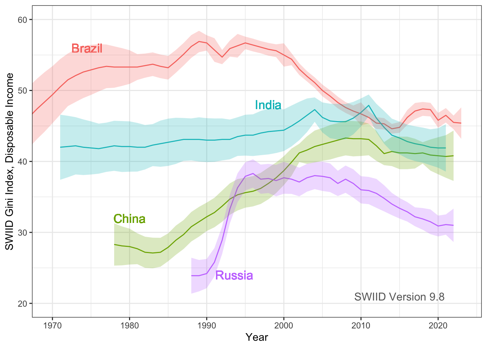
SWIID Version 9.8 is available!
update
swiid
Hi everyone! Version 9.8 of the SWIID is now available! This new release adds to its source data nearly three thousand new Ginis since version 9.7…
Dec 26, 2024
Frederick Solt
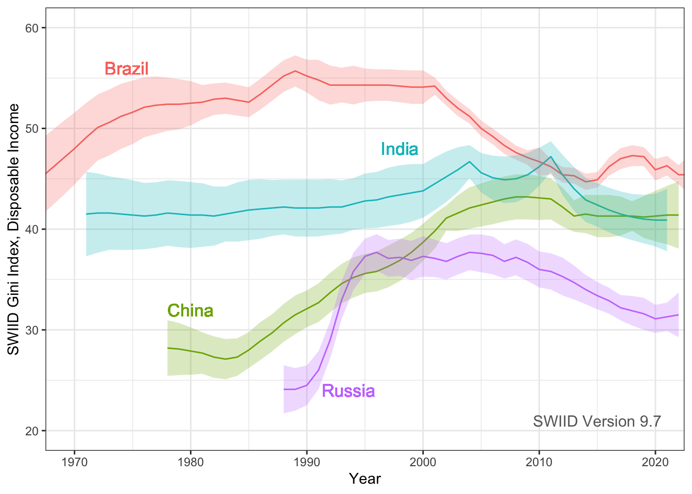
SWIID Version 9.7 is available!
update
swiid
Hi everyone! Version 9.7 of the SWIID is now available! This new release adds to its source data nearly two thousand new Ginis since version 9.6…
Sep 14, 2024
Frederick Solt
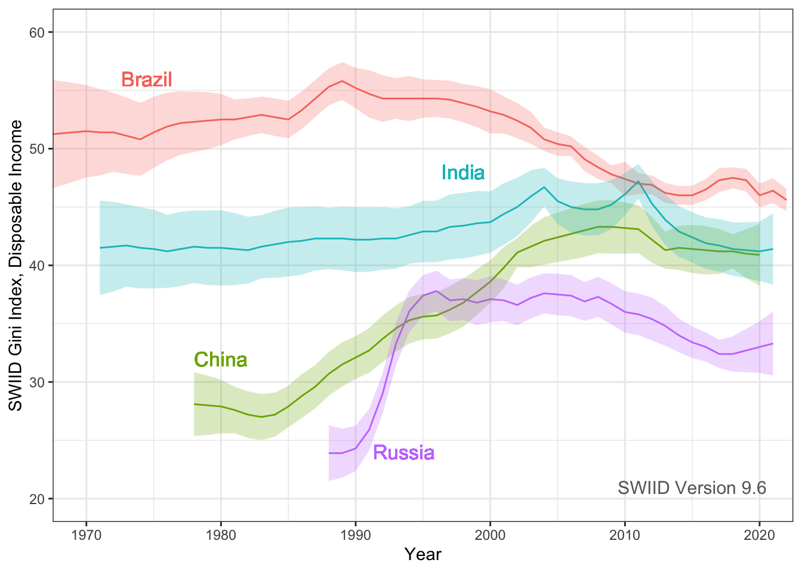
SWIID Version 9.6 is available!
update
swiid
Hi everyone! Version 9.6 of the SWIID is now available! This new release adds to its source data over eight thousand new Ginis since version 9.5…
Dec 20, 2023
Frederick Solt
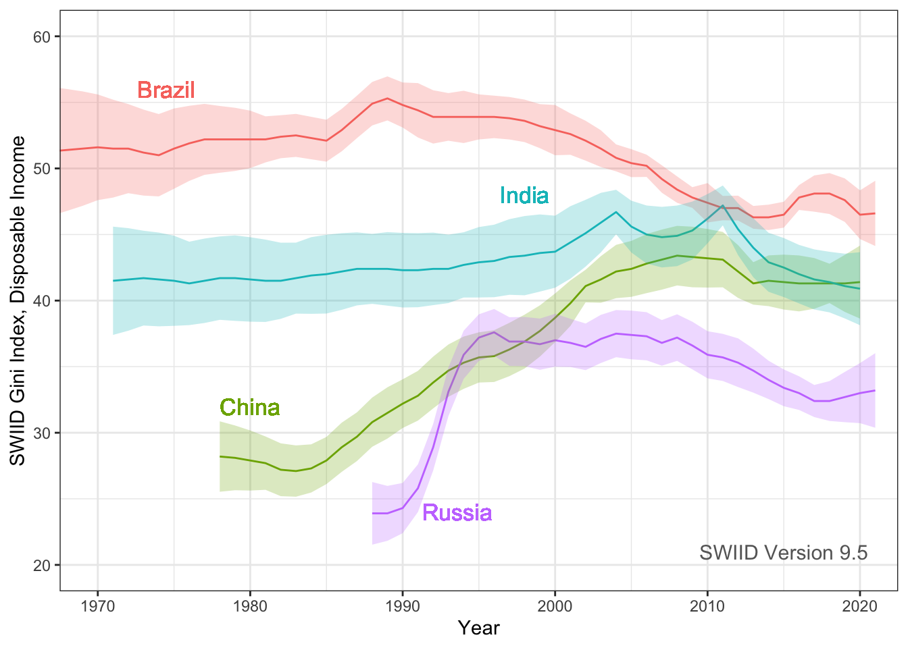
SWIID Version 9.5 is available!
update
swiid
Hi everyone! Version 9.5 of the SWIID is now available! This new release adds to its source data 169 new Ginis since version 9.4…
Jun 27, 2023
Frederick Solt
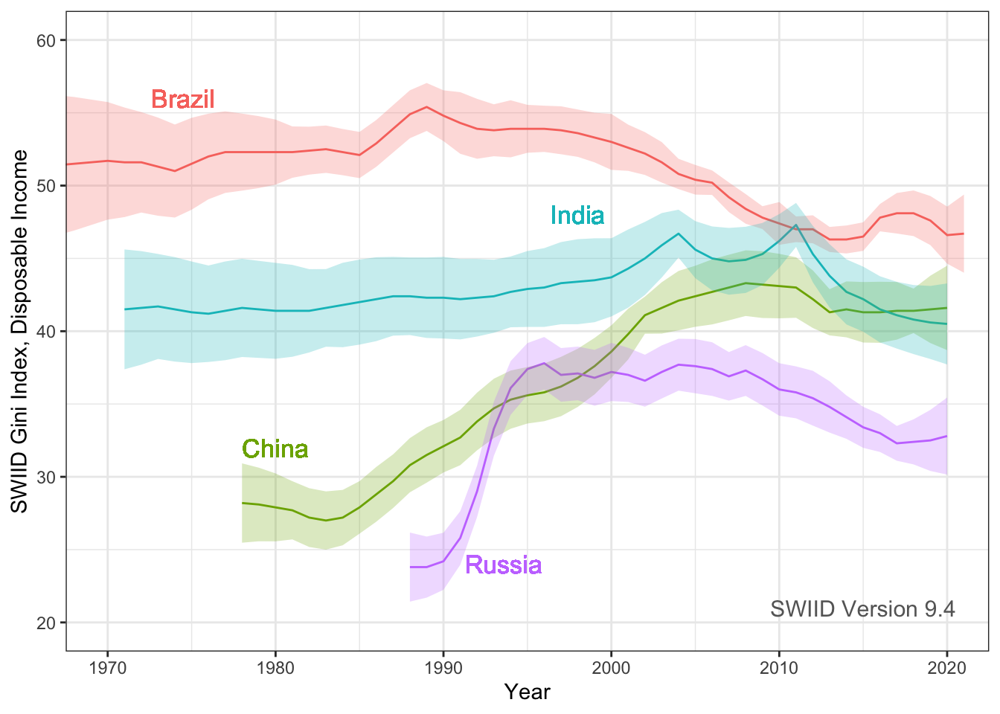
SWIID Version 9.4 is available!
update
swiid
Hi everyone! Version 9.4 of the SWIID is now available! This new release adds to its source data 5494 new Ginis since version 9.3…
Nov 22, 2022
Frederick Solt
My Workflow
note
Today there was a workshop on at the Cluster of Excellence Politics of Inequality on research workflows with presentations by Maarten Buis and me. I…
Jul 1, 2022
Frederick Solt
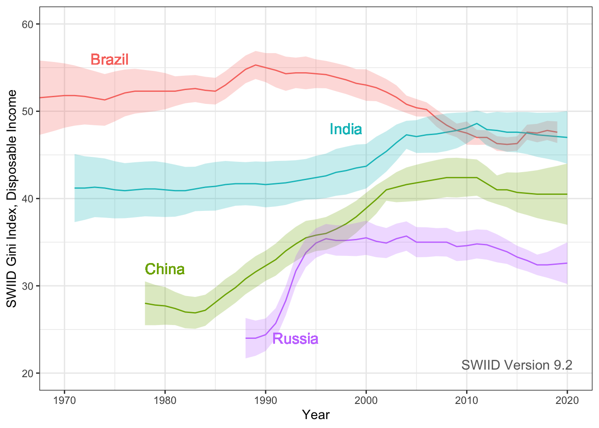
SWIID Version 9.3 is available!
update
swiid
Hi everyone! Version 9.3 of the SWIID is now available! This new release adds to its source data 3834 new Ginis since version 9.2…
Jun 24, 2022
Frederick Solt
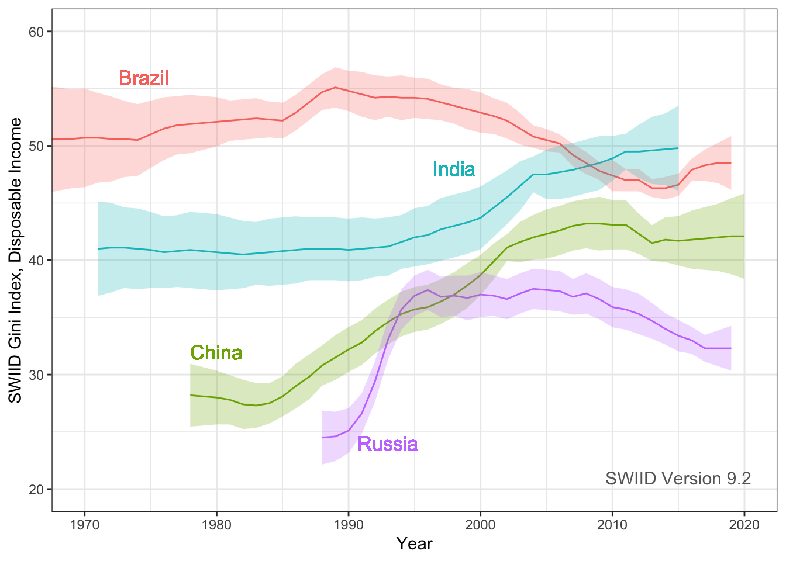
SWIID Version 9.2 is available!
update
swiid
Hi everyone! Version 9.2 of the SWIID is now available! This new release adds to its source data 3834 new Ginis since version 9.1…
Dec 22, 2021
Frederick Solt
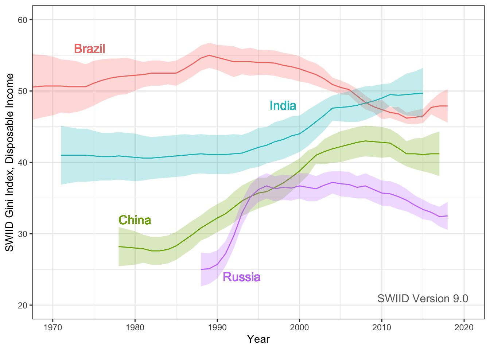
SWIID Version 9.0 is available!
update
r
swiid
Hi everyone! Version 9.0 of the SWIID is now available! This new release adds to its source data 947 new Ginis since version 8.3…
Oct 21, 2020
Frederick Solt
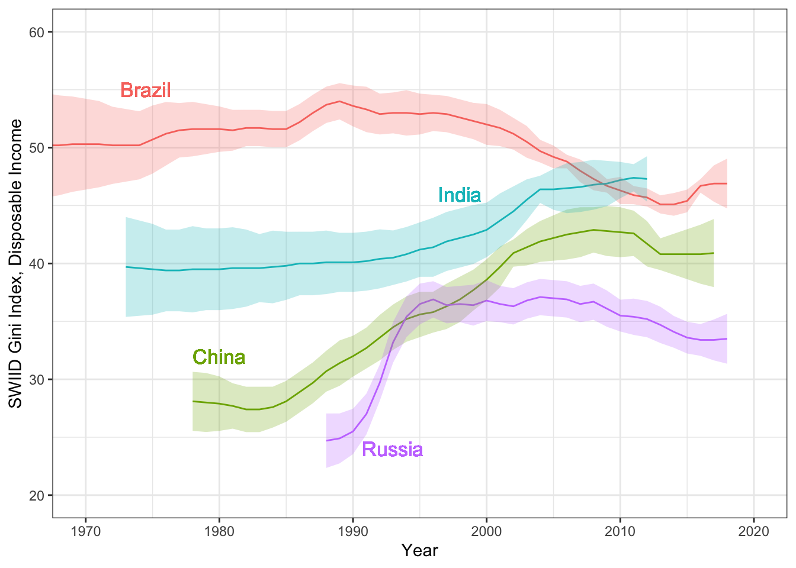
SWIID Version 8.3 is available!
update
r
swiid
Version 8.3 of the SWIID is now available! This new release adds to its source data 4759 new Ginis since version 8.2…
May 19, 2020
Frederick Solt
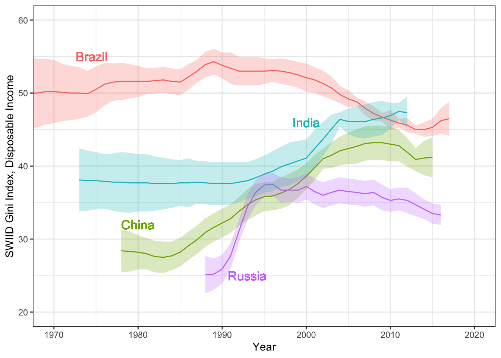
SWIID Version 8.0 is available!
update
r
swiid
Version 8.0 of the SWIID is now available! In addition to important behind-the-scenes improvements to the estimation routine, this new release:
Feb 28, 2019
Frederick Solt
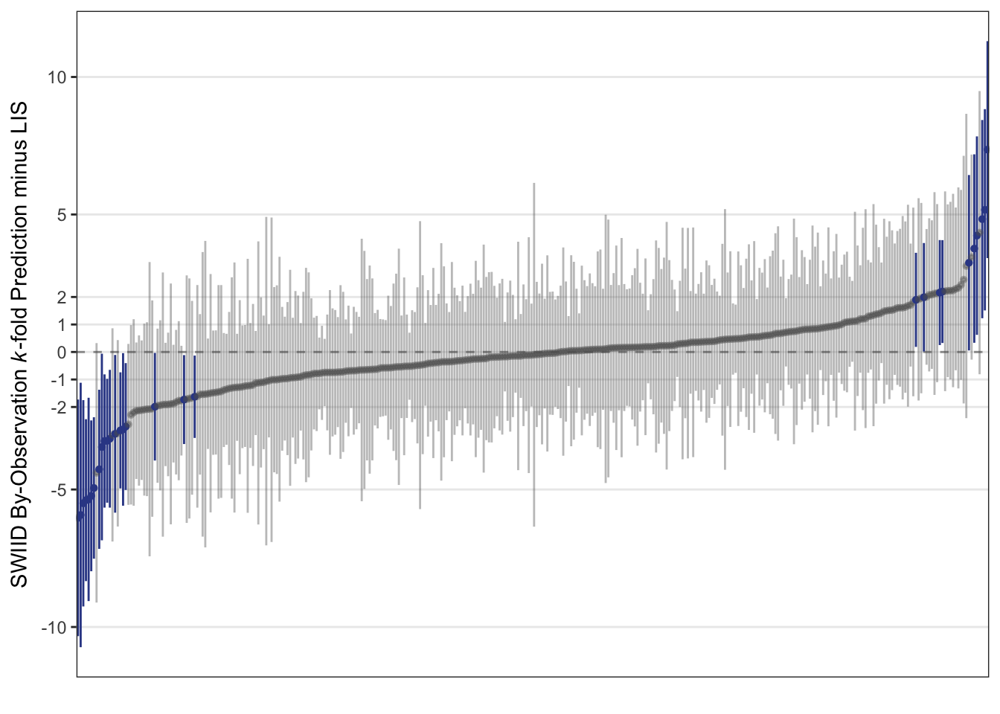
Using Cross-Validation to Evaluate the Comparability of the SWIID’s Estimates
note
r
swiid
From its origins now over ten years ago, the goal of the Standardized World Income Inequality Database has been to provide estimates of income…
Jan 16, 2019
Frederick Solt
How to Switch Your Workflow from Stata to R, One Bit at a Time
note
r
A recent exchange on Twitter reminded me of my switch to R from Stata. I’d started grad school in 1999, before R hit 1.0.0, so I’d been trained…
Aug 15, 2018
Frederick Solt
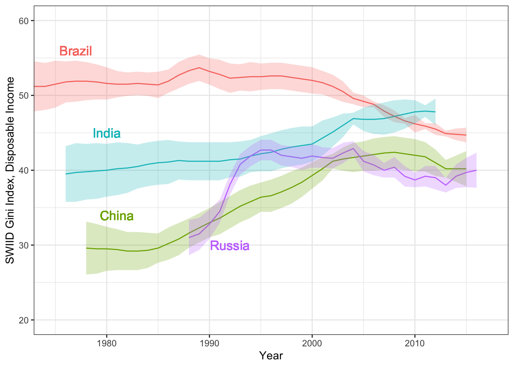
SWIID Version 7.1 is available!
update
r
swiid
Version 7.1 of the SWIID is now available! In addition to important behind-the-scenes improvements to the estimation routine, this new release:
Aug 14, 2018
Frederick Solt
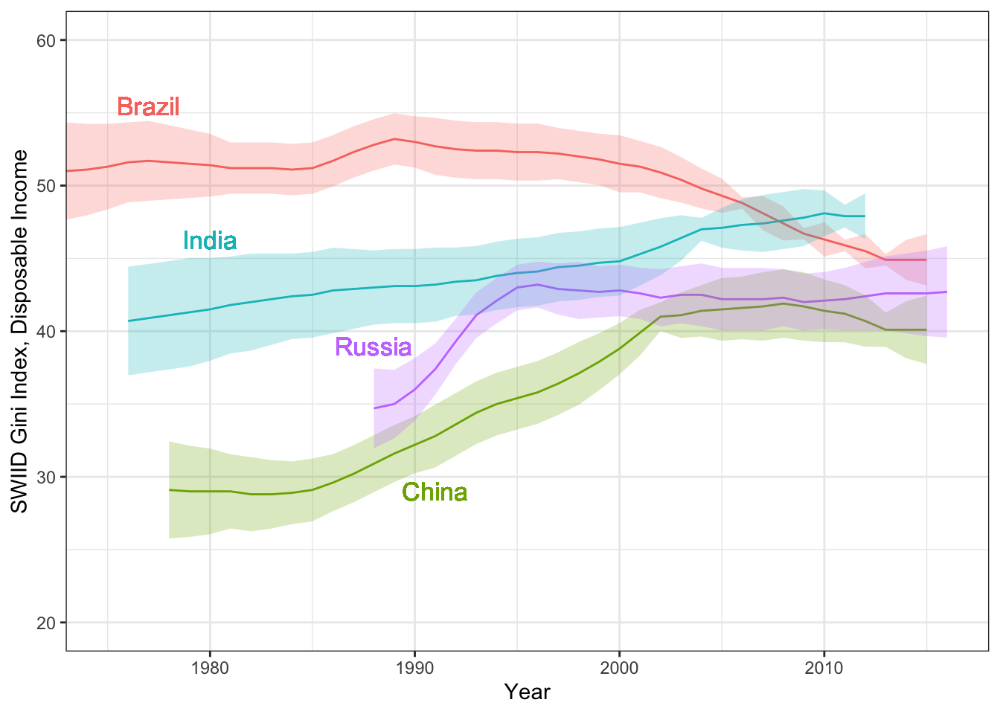
SWIID Version 6.2 is available!
update
r
swiid
Version 6.2 of the SWIID is now available! Building on the end-to-end revision accomplished in Version 6.0 last July and the update Version 6.1 last…
Mar 26, 2018
Frederick Solt
SWIID Version 6.1 is available!
update
r
swiid
Version 6.1 of the SWIID is now available! Building on the end-to-end revision accomplished in Version 6.0 last July, this new release:
Oct 27, 2017
Frederick Solt
The SWIID Source Data
note
r
swiid
I have been producing the Standardized World Income Inequality Database for nearly a decade. Since 2008, the SWIID has provided estimates of the…
Jul 28, 2017
Frederick Solt
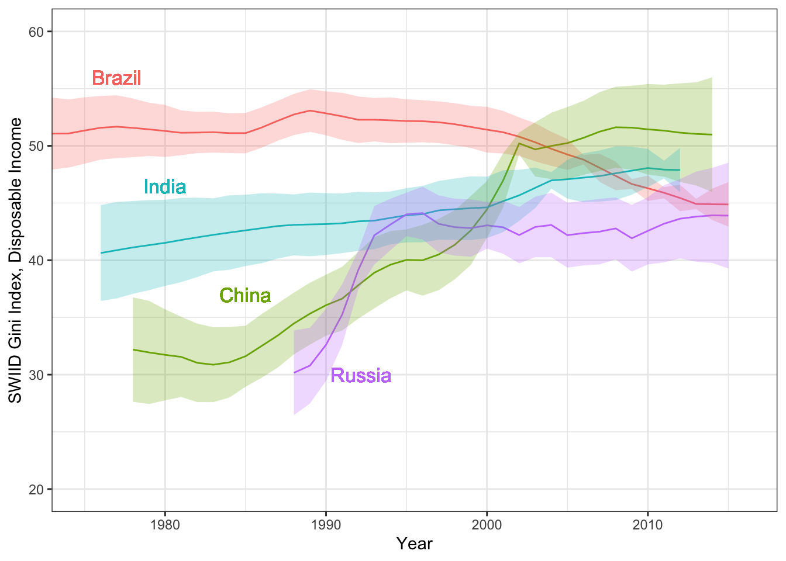
SWIID Version 6.0 is available!
update
r
swiid
Version 6.0 of the SWIID is now available! It represents a complete, starting from scratch, end-to-end revision, with all the heavy lifting now done…
Jul 27, 2017
Frederick Solt
Notes for Those New to Writing Peer Reviews
note
Today we had a workshop for our graduate students on writing peer reviews. Here are the notes I spoke from:
Apr 14, 2017
SWIID Version 5.1 is available!
update
swiid
Version 5.1 of the SWIID is now available! It revises and updates the SWIID’s source data and estimates. It also includes expanded training modules…
Jul 21, 2016
icpsrdata makes your ICPSR downloads reproducible!
note
icpsrdata
r
If you download data from the Inter-university Consortium for Political and Social Research archive archive, you can make your research reproducible…
May 20, 2016
Try pewdata!
note
pewdata
r
If you use Pew Research Center surveys, you can make your research reproducible with the pewdata package now available…
May 13, 2016
SWIID Wins NSF Support!
update
swiid
The National Science Foundation has awarded three years of support to update and improve the SWIID! Yay!
Aug 10, 2015
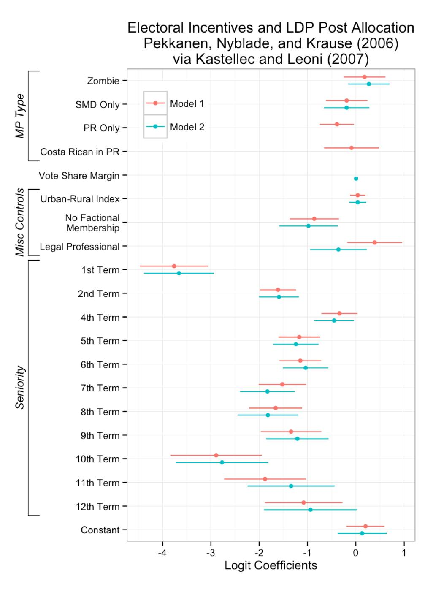
Use dotwhisker for your APSA slides!
note
dotwhisker
r
With the APSA coming up, and in the interest of minimizing the number of times we hear “sorry, I know you won’t really be able to see these…
Jul 30, 2015
Now on CRAN: interplot
note
interplot
r
Hu Yue and I just published interplot on CRAN, our first R package…
Jun 26, 2015
Inequality in China
note
swiid
A new working paper by IMF researchers Serhan Cevik and Carolina Correa-Caro observes that sharply rising inequality has made China one of the most…
Mar 27, 2015
SWIID Version 5.0 is available!
update
swiid
Version 5.0 of the SWIID is now available, and it is a major update. A new article of record (currently available as a working paper while under…
Oct 2, 2014
SWIID Version 4.0 is available!
update
swiid
Version 4.0 of the SWIID is now available here. Drawing on nearly 14,000 Gini observations in more than 3100 country-years, this version provides…
Sep 30, 2013
My talk at the UN
note
swiid
Earlier this month, I gave a talk previewing Version 4.0 of the SWIID to the Development Policy and Analysis Division of the…
Sep 29, 2013
SWIID Version 3.1 now available!
update
swiid
Version 3.1 of the SWIID is now available here. The primary difference introduced in Version 3.1 is that the data on which the SWIID is based have…
Jan 2, 2012
SWIID Version 3.0 is now available!
update
swiid
Version 3.0 of the SWIID is now available, with expanded coverage and improved estimates.
Jul 11, 2010
Using the SWIID Standard Errors
note
swiid
Incorporating the standard errors in the SWIID estimates into one’s analyses is the right thing to do, but it is not a trivial exercise. I myself…
Jun 20, 2010
SWIID Version 2.0
update
swiid
Version 2.0 of the SWIID is now available, and it is a major upgrade. It introduces two important changes from Version 1.1 (the version described in…
Jul 31, 2009
SWIID Version 1.1
update
swiid
So much for version control. With apologies to v1.0 users, Version 1.1 is the SWIID as reported in “Standardizing the World Income Inequality…
Oct 12, 2008
SWIID Version 1.0
update
swiid
“Standardizing the World Income Inequality Database” has been accepted for publication in the Social Science Quarterly. Version 0.9 of the SWIID is…
Sep 13, 2008
SWIID Version 0.9
update
swiid
The SWIID is currently undergoing peer review for publication.
Aug 5, 2008
No matching items